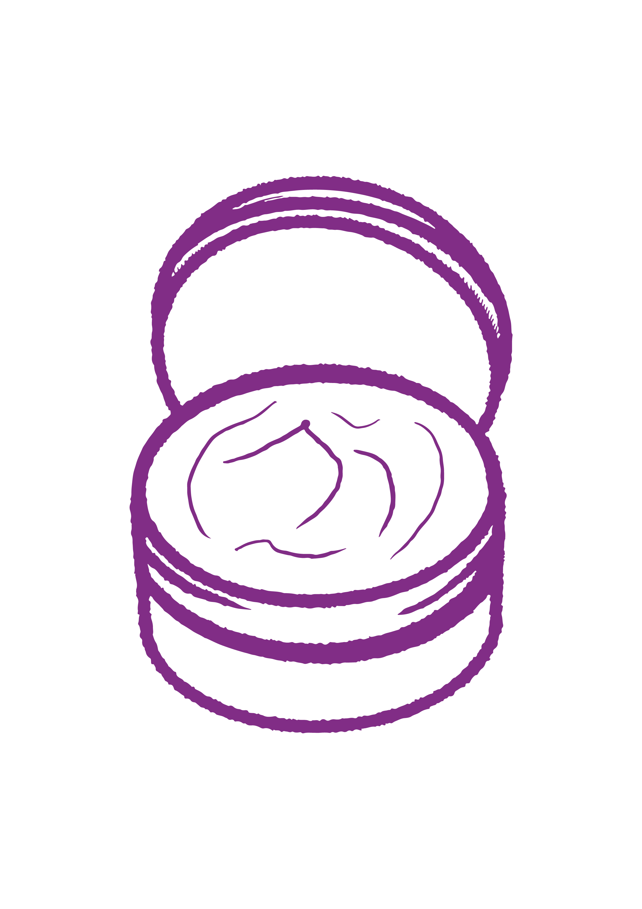

Il trucco è un nemico insidioso per la pelle se non rimosso correttamente. Dormire con il make-up, infatti, impedisce alla pelle di respirare e rallenta il processo di rinnovamento cellulare. Il risultato è spesso una pelle stanca, con occhiaie, borse e un colorito spento al mattino. Per evitare tutto questo, la doppia detersione è il miglior metodo. Come prima fase utilizza un olio o un balsamo struccante per rimuovere il trucco e le impurità più superficiali.
